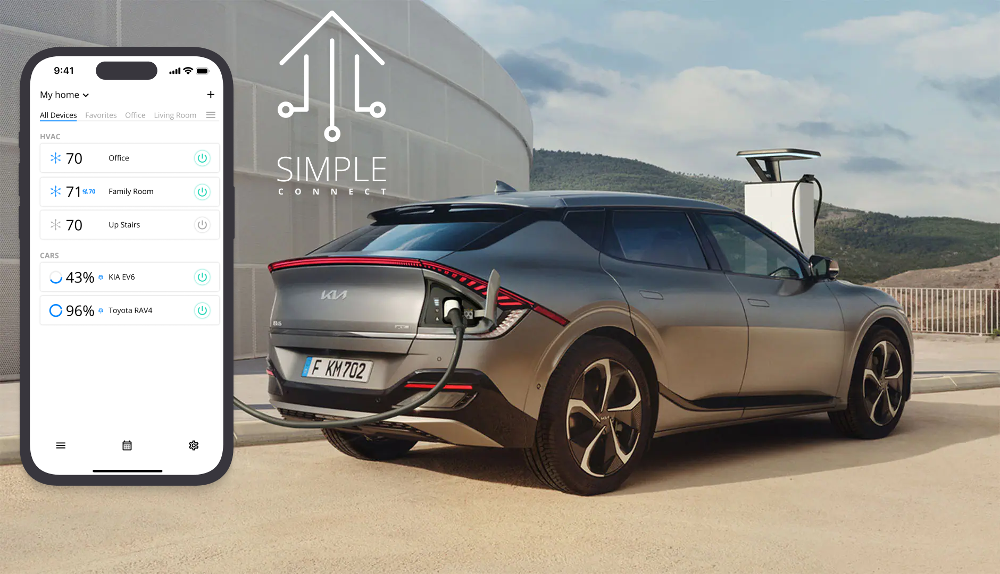
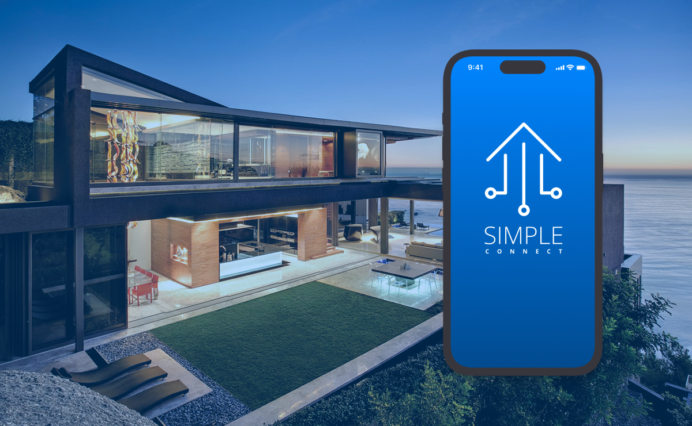

I've done work for
⌘


How I Architect AI Systems
⌘
A reference pattern for enterprise orchestration over local, self-hosted LLMs — request routing, retrieval, tool execution and guardrails, all inside the private network. Hover any node for detail.
← scroll to explore the full diagram →

